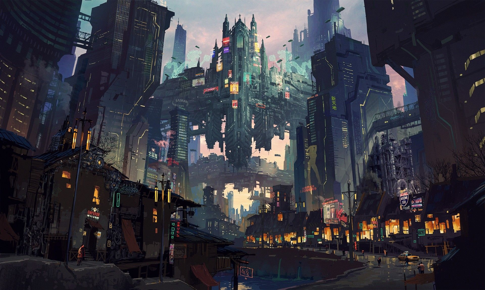
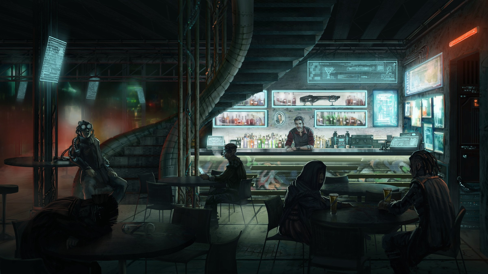
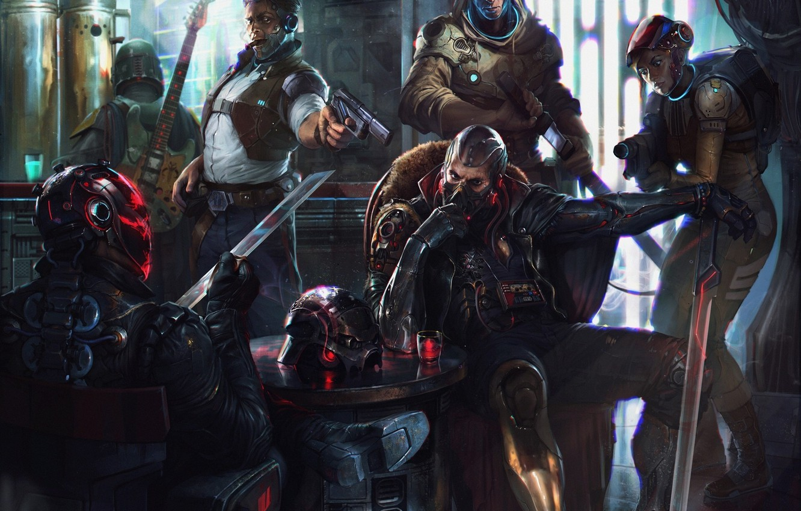
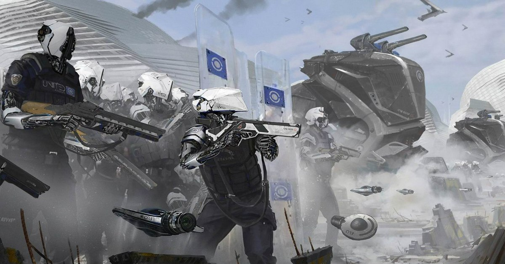
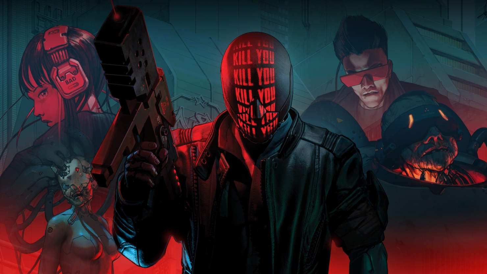
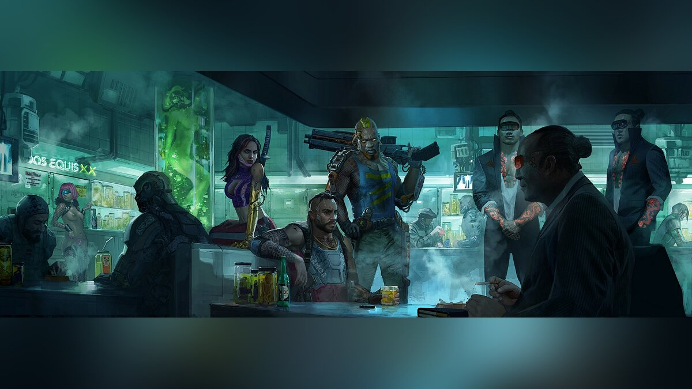
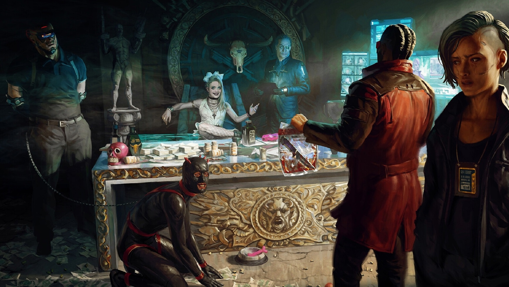

Порочный и красивый Скуф-Сити ждет именно вас!
Пора навести порядок в городе, старые боссы Корпораций уже не в авторитете, а значит можно начинать прибирать к рукам их состояние. Кто бросит вызов хищникам Скуф-Сити?
Кто правит Скуф-Сити?
Скуф-Сити — это город будущего, залитый дождями и окутанный плотными тучами смога. В его узких улицах и темных переулках переплетаются сотни неоновых вывесок, бликов рекламных щитов и мерцающих экранов. Корпоративные небоскребы башнями вздымаются над городом, борясь за место под часто непроглядным небом. Напротив, бедные районы затерялись в плетеных нитях проводов и обломков технологического мусора.
Нелегальные операции и подпольные сделки цветут на каждом углу, в то время как официальные структуры власти теряют контроль. Корпорации властвуют над городом, диктую свои правила и манипулируя обитателями, словно марионетками.
Прошлое - это ваш Дом...
Донер - "У Ашотика"
"У Ашотика" - это скрытая жемчужина в сердце Скуф-Сити, небольшая уютная донерная, которая носит своё название в честь Ашотика, загадочного исцелителя, который когда-то был известен своими необычными способностями и чудодейственными донерами.
Донер стала местом отдыха для наших героев, потому что Ашотик был связан с каждым из них в прошлом. Он предоставлял им убежище, помогая скрыться от преследователей, и обеспечивал нелегальными товарами в сложные времена. После его загадочного исчезновения, "У Ашотика" остался как памятник его добрым делам, и его наследие продолжается через вкусную еду и теплую атмосферу этого замечательного места.
Особо опасные!
Крупные и малые Корпорации
Скуф-Сити окутан мраком преступности и коррупции, создавая мрачный и нуарный облик этого киберпанковского мегаполиса. В каждом уголке города пульсируют нечестные сделки, махинации властей, коррупция, наркоторговля и другие нелегальные мероприятия.
Преступность расцветает на улицах, где банды сражаются за территории, контроль над наркотической торговлей и другими незаконными видами бизнеса. Безопасность обывателей нарушается на каждом шагу, а власти сталкиваются с трудностью поддерживать порядок.
Коррупция пронизывает все уровни общества, начиная от низших слоев и заканчивая элитой. Люди власти и бизнесмены используют свои ресурсы и влияние для достижения своих целей, игнорируя закон и мораль. Решения принимаются не в интересах горожан, а во благо самих коррупционеров.
Скуф-Сити делится на 4 района
Западные Хобо: Анархия в чистом виде!
Западная часть города контролируется двумя враждующими бандитскими группировками:
Особенности их территории
Обычные условия: Кровавый Картель

Длительность: 1-4ч., Стоимость: 0-600 ₽

Длительность: 2-5ч., Стоимость: 500-1200 ₽

Длительность: 1-5ч., Стоимость: 700-1500 ₽
Хардкор

Длительность: 2-6ч., Теги: Point & Click, Point-and-click

Длительность: 4-8ч., Теги: Point & Click, Point-and-click

Длительность: 2-7ч., Теги: FPS, Shooter
Обычные условия: Адские Вороны

Длительность: 3-7ч., Стоимость: 0-1000 ₽

Длительность: 3-8ч., Стоимость: 1000-2000 ₽

Длительность: 4-10ч., Стоимость: 1500-3000 ₽
Хардкор

Длительность: от 5ч., Теги: Point & Click, Point-and-click

Длительность: 5-12ч., Теги: FPS, Shooter

Длительность: от 6ч., Теги: FPS, Shooter
Северные Дома: Традиции превыше всего
На северной части города действуют две мафиозные организации: "Синдикат Северной Звезды" "Memento mori" Они жестко контролируют подпольные операции, легальные и нелегальные бизнесы, и стоят за большим числом криминальных деяний. Они презирают всех, кто не является частью их семьи. Прославились исключительно прошлыми заслугами, сейчас действуют скрытно
Особенности их территории
Обычные условия: Синдикат Северной Звезды
★ Длительность: 3-7ч.,
Стоимость: 400-800 ₽
★★ Длительность: 4-8ч.,
Стоимость: 700-1500 ₽
★★★ Длительность: 4-8ч.,
Стоимость: 0-700 ₽
Хардкор
✪ Длительность: 3-7ч.,
Теги: Platformer, 3D Platformer
✪✪
Теги: Psychological Horror, Survival Horror, Horror
✪✪✪ Стоимость: 10000-2000,
Теги: Platformer, 3D Platformer
Обычные условия: Memento mori
★ Длительность: 5-10ч.,
★★ Длительность: 7-15ч.,
Стоимость: 1500-3000 ₽
★★★ Длительность: 7-15ч.,
Стоимость: 0-1500 ₽
Хардкор
✪ Длительность: 5-10ч.,
Теги: Platformer, 3D Platformer
✪✪ Длительность: от 8ч.,
Теги: Platformer, 3D Platformer
✪✪✪ Длительность: от 7ч.,
Теги: Psychological Horror, Survival Horror, Horror
Восточные Магнаты: Деньги и власть и ничто больше
Восточная часть города оказалась под властью двух влиятельных компаний, неформально известных как "Индустриальные Хищники" "Технократы" Они владеют ключевыми секторами экономики и имеют тесные связи с государственными структурами, пытаясь взять под контроль всё, что приносит прибыль. Они готовы работать с кем угодно, лишь бы деньги капали. Прославились своей мерзкой натурой и тесными связями с государством.
Особенности их территории
Обычные условия: Индустриальные Хищники
★ Оценка: 45-85,
Стоимость: 1500-3500 ₽
★★ Длительность: 7-14ч
★★★ Длительность: 6-12ч,
Оценка: 30-70
Хардкор
✪ Теги: Puzzle
✪✪ Теги: Rogue-like, Roguelike
✪✪✪ Длительность: 7-14ч
Теги: Puzzle
Обычные условия: Технократы
★ Стоимость: 700-2000 ₽
★★ Длительность: 8-16ч,
Стоимость: 1000-3000 ₽
★★★ Длительность: 10-20ч,
Стоимость: 0-2500 ₽
Хардкор
✪ Длительность: 8-18ч,
Теги: Anime
✪✪ Длительность: от 8ч,
Теги: Rogue-like, Roguelike
✪✪✪ Длительность: от 10ч,
Теги: Anime
Южные Титаны: Люди ставшие Богами
Южная часть города подчинена двум крупным корпорациям: "ОмниКорп"
-

"Терраблейд":
Они управляют высокими технологиями
и массовой промышленностью, контролируя ресурсы и влияя на политику города и многих стран.
Они Боги
Скуф-Сити, по их слову исполняют любой каприз.
Их слово закон, их действия не обсуждаются.
Особенности их территории
Обычные условия: ОмниКорп
★ Длительность: 8-14ч,
Оценка: 25-65
★★ Оценка: 20-70,
Стоимость: от 2000 ₽
★★★ Длительность: 10-18ч,
Стоимость: 1000-2500 ₽
Хардкор
✪ Длительность: 10-20ч,
Теги: RPG, Action RPG, JRPG, Tactical RPG
✪✪ Оценка: 20-60ч,
Теги: RPG, Action RPG, JRPG, Tactical RPG
✪✪✪ Стоимость: от 2500 ₽,
Теги: RPG, Action RPG, JRPG, Tactical RPG
Обычные условия: Терраблейд
★ Длительность: 10-20ч,
Стоимость: 0-2500 ₽
★★ Стоимость: От 3000 ₽
★★★ Длительность: От 14ч
Хардкор
✪ Длительность: 10-20ч,
Теги: Turn-Based Strategy, Strategy, Strategy RPG
✪✪ Оценка: 55-85,
Теги: Turn-Based Strategy, Strategy, Strategy RPG
✪✪✪ Длительность: от 16ч,
Теги: Turn-Based Strategy, Strategy, Strategy RPG
Они словно призраки...
Легенды Скуф-Сити
В мегаполисе, где корпорации схватываются за власть, уличные банды сталкиваются в жестоких схватках, а киберпреступность процветает на парадоксальном фоне технологического прогресса, рождаются истории, способные захватить воображение.
Легенды Скуф-Сити всегда сопряжены с загадочностью и недосягаемостью. Говорят, что эти герои появляются из ниоткуда, словно призванные городом самим. Их прошлое и история окутаны тайной, и только едва уловимые намеки и обрывки рассказов создают мозаику их жизни.
Но откуда эти легенды возникают? Некоторые говорят, что они родились из самой ткани Скуф-Сити, из отчаяния и бунта, из жажды свободы и возможности оставить след в истории. Другие утверждают, что они пришли из таинственных мест, где технологии переплелись с магией, создавая непостижимые способности. А может быть, это всего лишь сказки, усиленные тем, что люди жаждут надежды в темных временах.
Годд "Купи" Товард

Годд "Купи" Товард - бывший корпоративный техник-уборщик, который был модифицирован и стал наемным опаснейшим хакером Скуф-Сити. В его металлическом теле спрятаны наноботы, позволяющие ему маскироваться и проникать в любую часть Всемирной Сети. Известен своими уникальными способностями впаривать говно.
Особые квесты Годд "Купи" Товард
Док Гилтикус
Гилтикус - бывшая(ий) хирург-кибернетик, она создавала и модифицировала органы и части тела для улучшения человеческих возможностей. Однако она покинула медицинскую карьеру и стала наемным киберпсихологом и шантажистом, разоблачая интимные секреты клиентов.
Особые квесты Гилтикус
Мудисон

Бывший полицейский, превратившийся в таинственного наемного убийцу с киберголовой Огромного размера и искусственными голосовыми модулями. Он может разносить своего врага исключительно своей головой и "душными" речами.
Особые квесты Мудисон
Амурант
Амурант - легендарная гонщица уличных гонок на антигравитационных скутерах. Она стала символом свободы и бунта против системы контроля и монополий корпорациями. Амурант выиграла десятки смертельно опасных гонок и стала иконой субкультуры, именнуемой "CarsFans", где ее преданные фанаты благодарят ее за проявления ее "борьбы" над Корпами.
Улицы имеют свои секреты и тайны
Случайные встречи
Скуф-Сити, урбанистический киберпанковский мегаполис, известен своей непредсказуемой и динамичной атмосферой. В этом мире случайные встречи могут происходить в любой момент и в самых неожиданных местах. Узкие переулки, переполненные людьми и сияющими неоновыми вывесками, создают идеальное окружение для спонтанных встреч.
Случайные встречи могут стать ключевыми моментами в жизни персонажей, меняя их пути, цели и судьбы. В Скуф-Сити даже краткий разговор на перекрестке может привести к цепочке событий, влияющих на всю их жизнь в этом безжалостном киберпанковском мире.
Основные события
Гиены неоновых джунглий
Социальные группы
Скуф-Сити, урбанистический киберпанковский мегаполис, известен своей непредсказуемой и динамичной атмосферой. В этом мире случайные встречи могут происходить в любой момент и в самых неожиданных местах. Узкие переулки, переполненные людьми и сияющими неоновыми вывесками, создают идеальное окружение для спонтанных встреч.
Случайные встречи могут стать ключевыми моментами в жизни персонажей, меняя их пути, цели и судьбы. В Скуф-Сити даже краткий разговор на перекрестке может привести к цепочке событий, влияющих на всю их жизнь в этом безжалостном киберпанковском мире.
Эко-фаперы

Эта группировка сражается за чистоту окружающей среды и баланс между человеком и природой. Они оказывают давление на корпорации и власти, заставляя учесть экологические аспекты в принятии решений.
Арт 34

Эта группа независимых художников борется против контроля и культурной однородности, используя искусство как орудие. Их работы меняют людей, делая их человечнее и заставляя двигаться вперед. А их работы, пробуждают в людях доисторические эмоции и ощущения от жизни
Мошнаторы

Мошнаторы существуют только чтобы мешать всем жить свою обыденную жизнь. Их вечные "правильные" советы по тем или иным вопросам ставят под сомнения безопасность города. Они не принимают критику, потому что знают, что они Правы!
ООО "Скуф"

Элитное общество из успешных предпринимателей,искусствоведов и влиятельных личностей,организовавших свое отделение/фирму ООО "Скуф". Эта компания является площадкой для выработки и обсуждения будущих трендов скуфов во всем мире, от разработки бананового пива, до запуска "Торпед".
Особые квесты Социальных групп
На клетках "Социальных групп", участник покрутит колесо из особых событий, которые облегчат или усложнят ему прохождение ивента. Данные события не совпадают с событиями\предметами с колеса приколов, которые участники будут крутить по ходу ивента.
1. Получите +1 к итоговому значению следующего броска.
2. Получите -1 к итоговому значению следующего броска.
3. Получите +2 к итоговому значению следующего броска.
4. Получите -2 к итоговому значению следующего броска.
5. Переместитесь на клетку Казино "МелстройСлот" и пройдите там игру.
9. Потеряйте 1 поинт.
10. Верхний порог времени следующей клетки ниже на 2 часа.
11. Текущее преодоление всего игрового поля дает лишь 2 поинта, вместо 5.
12. Вернитесь на клетку, с которой вы начинали текущий ход и совершите ход
заново,
сохранив эффекты событий и предметов, влияющих на движение.
13. Получите 1 поинт.
14. Потеряйте все свои вещи.
15. Бесплатное прохождения игры(халявные поинты).
16. Доп игра на клетке.
*** этого Казино!
Казино "МелстройСлот"

Казино "МелстройСлот" - это великолепное убежище развлечений и азарта в сердце Скуф-Сити. С яркими неоновыми вывесками и футуристическим дизайном, оно манит посетителей в мир технологического восторга и риска. "МелстройСлот" известно своими передовыми игровыми автоматами, виртуальными столами,грандиозными спектаклями, а также тем, что посетители всегда соблюдают положенный дресс-код.
Помимо азартных игр, казино предоставляет роскошные бары, где можно насладиться футуристическими коктейлями, и высококлассные рестораны, предлагающие разнообразные кулинарные шедевры. "МелстройСлот" также известно своими тематическими вечеринками и шоу, объединяющими виртуальное и реальное искусство.
Особые условия Казино
Сыграйте в Dota 2 и выпейте пива
На клетке "Казино" участник сначала указывает на сайте Random.org диапазон от 1 до 31, что соответствует количеству уникальных пресетов на сайте, после чего роллит игру из пресета, соответствующему выпавшему числу на рандом.орг. Номинальная награда за прохождение игры на клетке "Казино" - 3 поинта. Судья может накинуть баллов если игра окажется слишком сложной
Выборы, выборы ...
Президентские выборы

Выборный процесс в Скуф-Сити олицетворяет сложное взаимодействие между корпорациями, криминальными синдикатами и городским правительством. Подкуп, шантаж, кибер-манипуляции - все это стандартные инструменты, используемые различными силами, чтобы добиться своих целей.
Внешний вид выборов может создавать иллюзию справедливости: плакаты, рекламные ролики, дебаты и митинги. Однако за этой фасадом скрывается интрига и борьба за власть. Технологические хакеры могут вмешиваться в процесс, меняя результаты голосования, и даже тщательно продуманные кампании могут потерпеть неудачу из-за кибер-вмешательства.
Особые условия Президентских выборов
На клетке "Выборы" участник, попавший на нее просит судью крутануть колесо "Президентских выборов", выпавшеее значение становится активным на целый круг, то есть пока игрок не пройдет снова клетку Выборов, закон не исчезнет. Либо пока следующий игрок не попадет на клетку Выборы. Тогда закон поменяется.
Если следом за ним встает другой игрок, и крутит колесо Выборы, то выпавший закон добавляется к 1, и пропадет, когда этот же игрок пройдет клетку Выборы.
В колесе Событий есть способность "Вето", оно позволяет наложить Вето на закон(один закон), тем самым игро минует негативный/позитивный закон.